Asia Family Trip — Taipei & East China亚洲家庭旅行 — 台北与华东
Tue, Sep 9Depart Seattle西雅图出发✈️ Travel day✈️ 旅行日
- 16:00 — Depart Seattle (SEA) on Delta DL69 to Taipei (A350-900, Main Cabin). Overnight flight.16:00 — 从西雅图机场 (SEA)搭乘 Delta DL69 前往台北（A350-900，Main Cabin）。夜间航班。
- Optional lounge at SEA before boarding.登机前可选择在 SEA 使用休息室。

 📍 map📍 地图
📍 map📍 地图
 📍 map📍 地图
📍 map📍 地图Thu, Sep 10Arrive Taipei — Taoyuan → hotel → night market抵达台北 — 桃园→酒店→夜市🛬 + 🍢 Ningxia🛬 + 🍢 宁夏
- 19:55 — Land Taoyuan (TPE) T2 (DL69). Foreign counters (4 US); Josh: China passport + paper Taiwan permit. Green customs channel (no meat).19:55 — 抵达桃园 (TPE) T2（DL69）。4 美籍走外籍柜台；Josh 用中国护照+入台证纸本正本。海关绿色通道（禁带肉制品）。
- Do 3 things in T2 arrivals before you leave (~21:00):
- ① EasyCard ×5 — 24h 7-Eleven / FamilyMart in arrivals (or EasyCard counter 08:00–22:00): NT$100/card + top up NT$500–600 each; pay cash.
- ② Data — pre-installed eSIM: Settings → turn plan on + Data Roaming ON (works on landing). Else buy a SIM at Chunghwa / Taiwan Mobile (24h) with passport (5-day 5G ≈NT$600).
- ③ Cash — Bank of Taiwan / Mega (24h, 1F, passport, NT$30 fee) change NT$10,000–15,000; or ATM (decline DCC → charge in TWD).
- ① 买悠游卡 EasyCard ×5 — 大厅 24h 的 7-11/全家（或电子票证柜台 08:00–22:00）：每张 NT$100 + 每张加值 NT$500–600；付现金。
- ② 上网 — 已装 eSIM：设置里启用套餐 + 打开数据漫游（落地即用）；否则到 中华电信/台湾大哥大（24h）凭护照买卡（5G 5天 ≈NT$600）。
- ③ 换现金 — 台银/兆丰（24h、1F、凭护照、手续费 NT$30）换 NT$10,000–15,000；或 ATM（拒绝 DCC、选新台币 TWD）。
- 🚐 Airport transfer — pre-book a 7-seat van on Klook / KKday (NT$1,800–2,200 ≈US$56–68; name-board meet-&-greet + flight tracking) → ~45–60 min to hotel, check in ~22:15. Backup: Airport MRT last express 22:55. (UberXL = 6 seats but no meet-greet.)🚐 接机 — Klook/KKday 预约 7 座 van（NT$1,800–2,200 ≈US$56–68；举牌接机+航班追踪）→ 约45–60分到酒店，约22:15 入住。备用：机场捷运末班快车 22:55。（UberXL 有6座但无举牌。）
- 🏨 Stay: Palais de Chine Hotel 君品 (No.3 Sec.1 Chengde Rd, by Taipei Main / Q Square) — hotel notes ↗🏨 住宿：君品酒店 Palais de Chine（承德路一段3号，台北车站/京站）— 住宿选择说明 ↗
- 🍢 ~22:40 — supper at Ningxia Night Market (closest, till ~23:30); first night 3–5 bites (oyster omelet, tofu pudding, lu-rou-fan).🍢 约22:40 — 宁夏夜市宵夜（离酒店最近，营业到约23:30）；第一晚只吃 3–5 样（蚵仔煎、豆花、卤肉饭）。

 📍 map📍 地图
📍 map📍 地图
 📍 map📍 地图
📍 map📍 地图
 📍 map📍 地图
📍 map📍 地图Fri, Sep 11Palace Museum · Taipei 101 · Din Tai Fung故宫 · 台北101 · 鼎泰丰🏛️ + 🗼 + 🥟🏛️ + 🗼 + 🥟
- Sleep in, breakfast → National Palace Museum 10:00–12:20 (open 09:00–19:00; NT$350; 1F wheelchair; Jadeite Cabbage in Gallery 302 ✓; Meat-shaped Stone NOT in Taipei Sep 7–14 — skip).晚起、早餐 → 故宫博物院 10:00–12:20（今 09:00–19:00；NT$350；1F 可租轮椅；翠玉白菜在 302 展厅✓；肉形石 9/7–14 不在台北→跳过）。
- 🍜 Lunch 12:30–14:00 — beef noodle + lu-rou-fan, both near Taipei Main, open Fri, A/C, cash only: Liu Shandong 劉山東 beef noodle (No.2, Ln.14, Sec.1 Kaifeng St; Taipei Main exit Z8/Z10; 08:00–20:00; Michelin Bib; ~NT$220) + Sanyuanhao 三元號 lu-rou-fan (No.11, Sec.2 Chongqing N. Rd; MRT Zhongshan; 09:00–21:00; NT$30–55). Arrive by 12:45; then Mom rests (avoid 14:00–17:00 slump).🍜 午餐 12:30–14:00 — 牛肉面+卤肉饭，两家都在台北车站附近、周五营业、有冷气、只收现金：劉山東牛肉麵（中正区开封街一段14巷2号；台北车站 Z8/Z10 出口；08:00–20:00；米其林必比登；牛肉面约 NT$220）+ 三元號魯肉飯（大同区重庆北路二段11号；中山站；09:00–21:00；卤肉饭 NT$30–55）。12:45 前到避排队；之后 Mom 回酒店休息（避开 14:00–17:00 低谷）。
- 🗼 Taipei 101 (arrive 16:25) — buy the NT$600 observatory ticket online (Klook/KKday); a Fri sunset is busy so consider the Fast Pass ~NT$1,200 to skip the queue. New entrance = Office Tower 1F (since 2026-07). Up to 89F indoor → sunset 18:02 → night views (91F open-air only if weather permits; no Elephant-Mountain climb).🗼 台北101（16:25 到） — 网上先买 NT$600 观景台票（Klook/KKday）；周五傍晚人多，建议加买 快速通关约 NT$1,200 免排队。新入口在办公大楼 1F（2026-07 起）。上 89F 室内 → 日落 18:02 → 夜景（91F 露台看天气才开；不爬象山）。
- ☕ Your NT$600 = ticket + coffee up top: 89F has the kafeD 101 café — with the observatory ticket just walk in, order coffee/cake (NT$120–350) and sit for the sunset. (Cheaper alt = 35F Starbucks, reserve ahead ☎(02)8101-0701, min NT$250/pax, 90 min — pick one, not both.)☕ 「花 NT$600 买票上楼喝咖啡」就是这样：89F 有 kafeD 101 咖啡厅 — 持观景台票直接进去点咖啡/蛋糕（NT$120–350），坐着等日落。（省钱替代＝35F 星巴克，需提前电话 ☎(02)8101-0701 预约、低消 NT$250/人、限 90 分钟 — 与观景台二选一。）
- 🥟 Dinner — Din Tai Fung, Taipei 101 B1 (walk-in take-a-number; 70% full: xiaolongbao + shrimp fried rice + wontons + greens).🥟 晚餐 — 鼎泰丰 台北101 B1（走号取号；七分饱：小笼包+虾仁蛋炒饭+红油抄手+青菜）。
- 🍡 Linjiang / Tonghua Night Market (near 101, till 00:00) + Grandma's fruit stall. 🧋 Milksha / Dejeng / WooTea.🍡 临江街/通化夜市（近101，到00:00）+ 阿婆水果摊。🧋 迷客夏/得正/五桐号。

 📍 map📍 地图
📍 map📍 地图
 📍 map📍 地图
📍 map📍 地图
 📍 map📍 地图
📍 map📍 地图Sat, Sep 12 · Option ADay trip — Jiufen (pick A or B)9/12 计划一 — 九份（A/B 二选一）🏮 Mountain town🏮 山城
- Choose ONE of today's two full plans — A Jiufen or B Yangmingshan.今天在两套完整计划里选一套走 — 计划一 九份 或 计划二 阳明山。
- 08:15 — 7-seat charter to Jiufen (~60–90 min; door-to-door, best for 5 + Mom; NT$4,500–6,500). Budget option: TRA to Ruifang + bus, or bus 1062.08:15 — 7 座包车去九份（约60–90分；门到门，5 人+Mom 最舒服；NT$4,500–6,500）。省钱：台铁到瑞芳+巴士，或 1062 直达。
- Jiufen Old Street, Mom-easy: Jishan St snacks → tea-house rest → a few steps of Shuqi Rd for photos → A-Mei teahouse from outside. Taro balls, grass cakes, fish-ball soup.九份老街 Mom 精简：基山街小吃 → 茶楼歇 → 竖崎路只拍一小段台阶 → 阿妹茶楼外部取景。芋圆、草仔粿、鱼丸汤。
- Leave by ~14:00 to beat crowds; afternoon rest at hotel.14:00 前撤避峰；午后回酒店休息。
- 🍢 Evening — Raohe Street Night Market (Blue Line direct to Songshan; till 00:00): pepper buns, herbal ribs; Rainbow Bridge night view.🍢 晚上 — 饶河街夜市（板南线直达松山；到00:00）：胡椒饼、药炖排骨；彩虹桥夜景。

 📍 map📍 地图
📍 map📍 地图
 📍 map📍 地图
📍 map📍 地图Sat, Sep 12 · Option BDay trip — Yangmingshan (pick A or B)9/12 计划二 — 阳明山（A/B 二选一）⛰️ Volcano park⛰️ 火山公园
- Alternative to A — lowest-effort, most rain-flexible, closest to the city.计划一的替代 — 最省力、最抗雨、离市区最近。
- 09:00 — 7-seat charter up Yangmingshan: Flower Clock → Zhuzihu (lunch / cafe) → Xiaoyoukeng fumaroles → Qingtiangang meadow (entrance only, skip the 2.5 km loop). Back ~15:00. Almost no walking.09:00 — 7 座包车上阳明山：花钟 → 竹子湖（午餐/咖啡）→ 小油坑喷气孔 → 擎天岗入口草原（只走入口、不走 2.5km 环线）。约15:00 回。几乎不走路。
- Skip if typhoon / heavy rain (then museum / malls instead).遇台风/大雨则不上山（改博物馆/百货）。
- 🍢 Evening — Raohe Street Night Market (same as Option A; Blue Line to Songshan; till 00:00).🍢 晚上 — 饶河街夜市（同计划一；板南线到松山；到00:00）。

 📍 map📍 地图
📍 map📍 地图
 📍 map📍 地图
📍 map📍 地图
 📍 map📍 地图📍 map📍 地图
📍 map📍 地图📍 map📍 地图Taipei🍜 Taipei Eats — 40 spots (by area)🍜 台北美食 — 40 家（按区）Food美食
Pins are approximate (many are district-level); tap ‘Open in Google Maps’ for the exact shop.图钉为近似（不少仅到『区』级）；点『在 Google Maps 打开』看确切店址。
These picks map onto the Sep 10–12 Taipei days, so you can weave them into Banqiao, museum, Xinyi, Shilin, Beitou, and Jiufen plans by area.这些店可穿插到 9/10–9/12 台北行程中，按板桥、故宫/士林、信义、北投、九份等区域顺路安排。
Restaurants / 餐廳餐廳 (Restaurants)
 📍 map📍 地图
📍 map📍 地图 📍 map📍 地图
📍 map📍 地图 📍 map📍 地图
📍 map📍 地图 📍 map📍 地图
📍 map📍 地图 📍 map📍 地图
📍 map📍 地图 📍 map📍 地图
📍 map📍 地图 📍 map📍 地图
📍 map📍 地图 📍 map📍 地图
📍 map📍 地图 📍 map📍 地图
📍 map📍 地图 📍 map📍 地图
📍 map📍 地图 📍 map📍 地图
📍 map📍 地图 📍 map📍 地图
📍 map📍 地图Jensen Huang's Taipei food map / 黃仁勳美食地圖黃仁勳美食地圖 (Jensen Huang's Taipei food map)
 📍 map📍 地图
📍 map📍 地图 📍 map📍 地图
📍 map📍 地图 📍 map📍 地图
📍 map📍 地图 📍 map📍 地图
📍 map📍 地图 📍 map📍 地图
📍 map📍 地图 📍 map📍 地图
📍 map📍 地图 📍 map📍 地图
📍 map📍 地图 📍 map📍 地图
📍 map📍 地图 📍 map📍 地图
📍 map📍 地图 📍 map📍 地图
📍 map📍 地图 📍 map📍 地图
📍 map📍 地图 📍 map📍 地图
📍 map📍 地图 📍 map📍 地图
📍 map📍 地图 📍 map📍 地图
📍 map📍 地图 📍 map📍 地图
📍 map📍 地图 📍 map📍 地图
📍 map📍 地图 📍 map📍 地图
📍 map📍 地图 📍 map📍 地图
📍 map📍 地图Bubble tea / 奶茶奶茶 (Bubble tea)
 📍 map📍 地图
📍 map📍 地图 📍 map📍 地图
📍 map📍 地图 📍 map📍 地图
📍 map📍 地图 📍 map📍 地图
📍 map📍 地图 📍 map📍 地图
📍 map📍 地图 📍 map📍 地图
📍 map📍 地图 📍 map📍 地图
📍 map📍 地图 📍 map📍 地图
📍 map📍 地图 📍 map📍 地图
📍 map📍 地图 📍 map📍 地图
📍 map📍 地图Sun, Sep 13Ximending morning → fly to Shanghai西门町上午 → 飞上海🛍️ + ✈️ + 🌃🛍️ + ✈️ + 🌃
- Morning — easy Ximending (Red House, pedestrian streets, drugstores, pineapple-cake souvenirs, Taiwanese snacks). Pack bags first.上午 — 轻松逛西门町（西门红楼、步行区、药妆、凤梨酥伴手礼、台湾小吃）。先收好行李。
- Back to hotel for luggage → leave ~14:30 → Songshan (TSA) T1 by ~15:00 (in-city airport; Priority Pass → Plaza Premium Lounge TSA3, airside).回酒店取行李 → 约14:30 出发 → 约15:00 到松山机场 (TSA) T1（市区机场；Priority Pass 可进 Plaza Premium 贵宾室 TSA3，安检后）。
- ✈️ China Eastern MU5098 Songshan (TSA) 17:15 → Shanghai Hongqiao (SHA) 18:55 (~1 h 40, ~$221/pax).✈️ 东航 MU5098 松山 TSA 17:15 → 上海虹桥 (SHA) 18:55（约1h40，约 $221/人）。
- ~19:00 arrive Hongqiao (next to Hongqiao HSR for tomorrow) → hotel + welcome view of The Bund + Lujiazui skyline. Stay Shanghai. 🏨 hotel notes ↗约19:00 抵虹桥（紧邻虹桥高铁站方便次日）→ 入住 + 傍晚先看一眼外滩 + 陆家嘴天际线。住上海。🏨 住宿说明 ↗

 📍 map📍 地图
📍 map📍 地图
 📍 map📍 地图
📍 map📍 地图
 📍 map📍 地图
📍 map📍 地图
 📍 map📍 地图
📍 map📍 地图Mon, Sep 14Shanghai → Hangzhou上海 → 杭州🚄 + ⛰️ West Lake🚄 + ⛰️ 西湖
- Morning HSR Shanghai Hongqiao → Hangzhou East (~1 h).上午高铁上海虹桥 → 杭州东站（约1小时）。
- Afternoon — West Lake lakeside / Hefang Street.下午 — 西湖湖滨 / 河坊街。
- Dinner — Hangzhou cuisine. Stay Hangzhou. 🏨 hotel notes ↗晚餐 — 杭帮菜。住杭州。🏨 住宿说明 ↗

 📍 map📍 地图
📍 map📍 地图
 📍 map📍 地图
📍 map📍 地图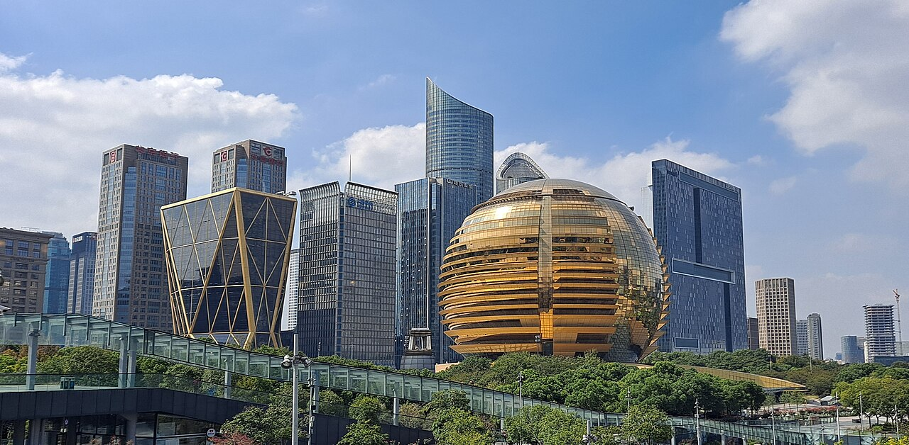
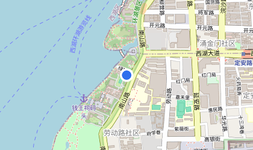
📍 map📍 地图Tue, Sep 15Hangzhou full day杭州一整天⛰️ Lake · temple · tea⛰️ 湖 · 寺 · 茶
- Morning — West Lake (Su Causeway, Broken Bridge, boat).上午 — 西湖（苏堤、断桥、游船）。
- Visit Lingyin Temple / Feilai Peak.参观灵隐寺 / 飞来峰。
- Afternoon — Longjing tea village. Stay Hangzhou.下午 — 龙井茶村。住杭州。

 📍 map📍 地图
📍 map📍 地图
 📍 map📍 地图
📍 map📍 地图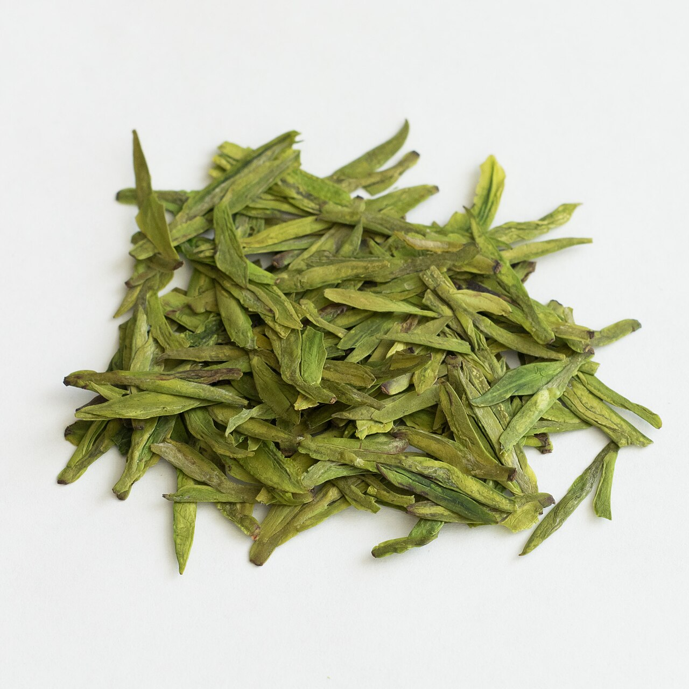
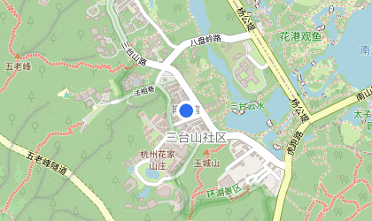
📍 map📍 地图Wed, Sep 16Hangzhou → Nanjing杭州 → 南京🚄 Qinhuai night🚄 秦淮夜色
- Morning HSR Hangzhou East → Nanjing South (~1 h 20).上午高铁杭州东站 → 南京南站（约1小时20分）。
- Afternoon — Confucius Temple (Fuzimiao) + Qinhuai River boat.下午 — 夫子庙 + 秦淮河游船。
- Dinner — Nanjing salted duck. Stay Nanjing. 🏨 hotel notes ↗晚餐 — 南京盐水鸭。住南京。🏨 住宿说明 ↗
📍 map📍 地图
 📍 map📍 地图
📍 map📍 地图
 📍 map📍 地图
📍 map📍 地图Thu, Sep 17Nanjing full day南京一整天🏛️ Purple Mountain · history🏛️ 紫金山 · 历史
- Morning — Sun Yat-sen Mausoleum + Ming Xiaoling on Purple Mountain.上午 — 中山陵 + 紫金山明孝陵。
- Midday — Presidential Palace.中午 — 南京总统府。
- Afternoon — Nanjing Massacre Memorial (somber). Stay Nanjing.下午 — 南京大屠杀遇难同胞纪念馆（氛围肃穆）。住南京。
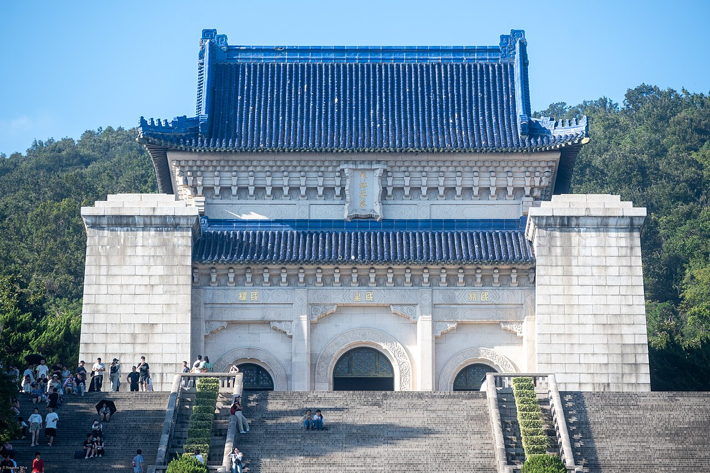
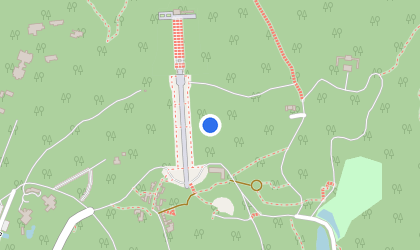
📍 map📍 地图
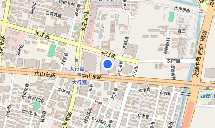
📍 map📍 地图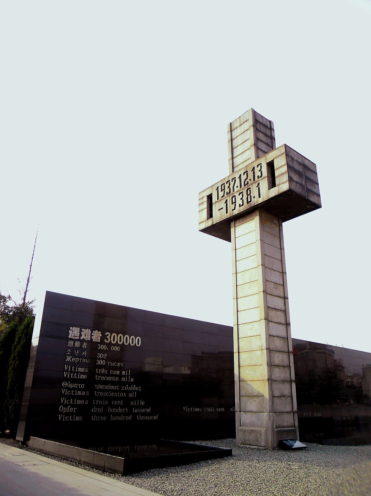
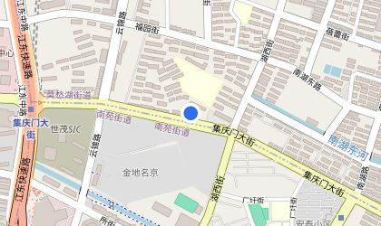
📍 map📍 地图Fri, Sep 18Nanjing → Suzhou南京 → 苏州🚄 Gardens · canals🚄 园林 · 运河
- Morning HSR Nanjing South → Suzhou (~1 h).上午高铁南京南站 → 苏州站（约1小时）。
- Afternoon — Humble Administrator's Garden + Pingjiang Road canal street.下午 — 拙政园 + 平江路运河古街。
- Dinner — Suzhou noodles. Stay Suzhou. 🏨 hotel notes ↗晚餐 — 苏州面。住苏州。🏨 住宿说明 ↗
📍 map📍 地图
 📍 map📍 地图
📍 map📍 地图
 📍 map📍 地图
📍 map📍 地图
 📍 map📍 地图
📍 map📍 地图Sat, Sep 19Suzhou → Shanghai苏州 → 上海🌃 Shopping · skyline night🌃 购物 · 天际线夜景
- Morning — Tiger Hill / Shantang Street, then HSR Suzhou → Shanghai Hongqiao (~30 min).上午 — 虎丘 / 山塘街，随后高铁苏州站 → 上海虹桥（约30分钟）。
- Afternoon — Nanjing Road shopping (+ a suitcase) & Yu Garden.下午 — 南京路购物（+ 一个行李箱）与豫园。
- Evening ⭐ — The Bund + Lujiazui skyline + Huangpu River night cruise. Stay Shanghai.晚上 ⭐ — 外滩 + 陆家嘴天际线 + 黄浦江夜游。住上海。
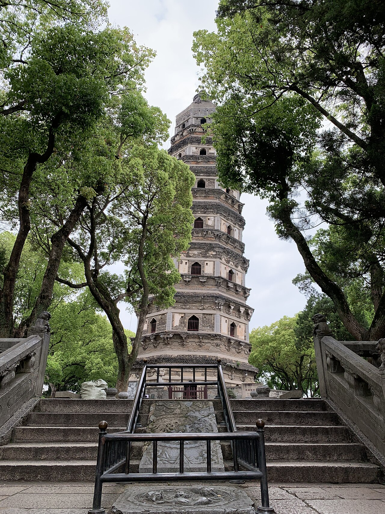
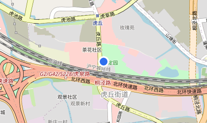
📍 map📍 地图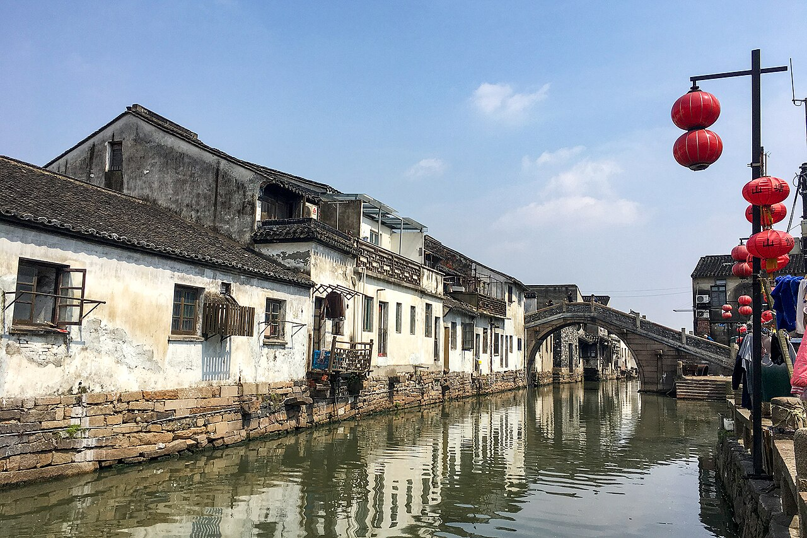
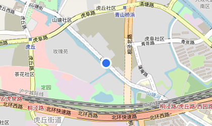
📍 map📍 地图📍 map📍 地图📍 map📍 地图
 📍 map📍 地图
📍 map📍 地图Sun, Sep 20Shanghai → Seattle上海 → 西雅图🛫 Fly home🛫 回家航班
- Morning — final shopping → ~14:00 to Pudong (PVG).上午 — 最后购物 → ~14:00 前往浦东机场 (PVG)。
- ✈️ Delta DL280 PVG 17:30 → Seattle same-day 13:50. Home ✅.✈️ Delta DL280 PVG 17:30 → 西雅图同日 13:50。回家 ✅。

 📍 map📍 地图
📍 map📍 地图
 📍 map📍 地图
📍 map📍 地图Shanghai🍜 Shanghai Eats & Sights — 24 saved spots (by district)🍜 上海美食·景点 — 收藏 24 处（按区）Food美食
From your Google list ‘上海吃喝玩乐’ (dianping探店 picks), de-duplicated against the main Shanghai days.来自你的 Google 收藏『上海吃喝玩乐』（大众点评探店），已与上海主行程去重。
Weave these into the last two Shanghai days by district; pins use exact coordinates.按区穿插到最后两天上海行程；图钉为精确坐标。
Huangpu · Bund / Nanjing Rd黄浦·外滩/南京路
 📍 map📍 地图
📍 map📍 地图 📍 map📍 地图
📍 map📍 地图 📍 map📍 地图
📍 map📍 地图 📍 map📍 地图
📍 map📍 地图 📍 map📍 地图
📍 map📍 地图 📍 map📍 地图
📍 map📍 地图 📍 map📍 地图
📍 map📍 地图 📍 map📍 地图
📍 map📍 地图 📍 map📍 地图
📍 map📍 地图 📍 map📍 地图
📍 map📍 地图Jing'an · West Nanjing Rd静安·南京西路
 📍 map📍 地图
📍 map📍 地图 📍 map📍 地图
📍 map📍 地图 📍 map📍 地图
📍 map📍 地图 📍 map📍 地图
📍 map📍 地图Xuhui · Former French Concession徐汇·衡复风貌区
 📍 map📍 地图
📍 map📍 地图 📍 map📍 地图
📍 map📍 地图 📍 map📍 地图
📍 map📍 地图 📍 map📍 地图
📍 map📍 地图 📍 map📍 地图
📍 map📍 地图 📍 map📍 地图
📍 map📍 地图Hongkou · North Bund虹口·北外滩
 📍 map📍 地图
📍 map📍 地图 📍 map📍 地图
📍 map📍 地图 📍 map📍 地图
📍 map📍 地图Pudong · Lujiazui浦东·陆家嘴
 📍 map📍 地图
📍 map📍 地图Info参考Where we stay — hotel notes per city🏨 住宿（各城 · 点开看选择说明）住宿住宿
每城住宿的选择理由 / 地址 / 备选见专门文档 master-plan-hotel.md（下方渲染版可直接跳到对应城市）：
Info参考Advance to-dos (by due date)⏰ 提前代办事项（按截止日期）截止日期截止日期
按截止日期从早到晚排；机票/酒店已另定，本表聚焦台北段 + 紧急事项。
| 截止日期 | 事项 | 说明 | 渠道 / App |
|---|---|---|---|
| 🔴 8/27 | 烧掉 2 张 Delta $49 eCredit 残值 | 逾期作废 | delta.com → My Wallet |
| 出发前 · 9/9 前 | 装好并测试 eSIM（连 Wi-Fi 装二维码） | 落地即用、免排队 | Airalo / Ubigi / Nomad（见「行前须知」） |
| 尽早 · 9 月初 | 订 君品酒店 3 晚（2 间 / 家庭房） | 价格随时涨 | 官网 / Trip.com（见「住宿」） |
| 9/5–9/7 | 订 9/12 九份 或 阳明山 7 座包车 | 周六旺季，提前 5–7 天锁车 | Klook / KKday |
| 9/7 前 | 订 9/10 桃园 T2 接机 7 座 van | 提前 3–7 天 | Klook / KKday |
| 9/3–9/9 (抵达前 7 天内) | 填 TWAC 入境卡 ×4（美籍） | 地址填实际入住的 君品 | TWAC 线上系统 |
| 9/9 前 | 彩色打印 入台证.pdf（Josh） | 入境/登机需纸本正本 | ✅ 已核发 8/10（观光三 #11563507234） |
| 9/10 或前一天 | 买 台北101观景台票（晴天先买 / 加买快速通关） | 周五傍晚排队 | taipei-101 官网 / Klook |
| 9/11 选做 | 预约 故宫 10:00 英文真人导览 | 选做 | npm.gov.tw |
| 9/8–9/11 选做 | 若去 35F 星巴克 → 提前 3 天电话预约 | 与 101 观景台二选一 | ☎ (02)8101-0701 |
| 当天用 App | 鼎泰丰取号（无需预约） | 走号 | 鼎泰丰 queue 网页/App |
📌 入台证「观光三」一般需提前 7–14 天申请（你已 8/10 核发）；TWAC 入境卡只能在抵达前 7 天内填（即 9/3 起）。
Info参考Before you go — transport & payments🧭 行前须知 · 交通与支付（EasyCard / eSIM / 现金 / 包车）行前须知行前须知
① 悠游卡 EasyCard（捷运 / 公交 / 便利店）
- 哪里买：桃园 T2 入境大厅 7-11 / 全家（24h）随时买+加值；或 电子票证柜台 08:00–22:00（21:00 到还开，拖到 22:00 后走超商）。
- 价格：空卡 NT$100/张（工本费不退）；每人加值 NT$500–600（机场捷运 T2→台北车站约 NT$150/人 + 3 天捷运公交）。5 人各一张。
- 能用：台北捷运、公交、机场捷运、便利店；去九份/阳明山的公交/台铁也能刷。
- ⚠️ iPhone 美区账户加不了悠游卡到钱包；但捷运闸机可刷 Apple Pay（公交/夜市不行）。离台前余额可在捷运服务台退（扣 NT$20）。
② eSIM / 上网
- 推荐（iPhone 一张全程）：Airalo「亚洲」无限 10 天 ≈US$35/人（台湾+大陆都覆盖、官方确认绕防火墙）。更省：台湾 Ubigi 3GB/7 天 ≈US$6 ＋ 大陆 Nomad 无限 7 天 ≈US$25。详见 esim.md。
- 激活步骤：出发前 Wi-Fi 下装好二维码；落地台湾 → 设置 → 蜂窝网络 → 启用该 eSIM 套餐 → 打开数据漫游 → 选它为数据线路（关「自动切换 SIM」防主卡跑流量）。
- 没带/手机不支持：T2 中华电信 / 台湾大哥大（24h）凭护照买卡（5G 5 天 ≈NT$600）。⚠️ 大陆段必须过关前就装好 eSIM 并把 VPN 提前装好付好。
③ 现金 & 支付
- 换现：T2 台湾银行 / 兆丰（24h、1F、凭护照），每笔手续费 NT$30；或 ATM 取现（拒绝 DCC、选新台币 TWD 结算最划算）。
- 换多少：5 人 3 天建议 NT$12,000–16,000；当晚先换/取 NT$10,000–15,000。
- 刷卡好用：酒店 / 商场 / 101 / 鼎泰丰 / 便利店 / 捷运闸机；夜市、九份小摊、传统早餐店认现金。
④ 7 座包车 / 接机（怎么约、哪个 App 划算）
- 接机（9/10 T2→君品）：Klook / KKday 预约 7 座私家车 NT$1,800–2,200（≈US$56–68），含举牌接机+航班追踪+英文，深夜最稳。55688 更便宜但要台湾手机号；UberXL（最多 6 人）无举牌、不追踪航班、深夜不保证。
- 9/12 包车（九份 / 阳明山）：KKday 7 座全日 NT$2,800–3,400（≈US$87–105），比 55688 便宜近一半，含油 / 过路 / 停车；Klook 同类可比价。
- 贴士：Klook 与 KKday 先比价（差价常 NT$200–400）；周六 9/12 提前 5–7 天订；备注「elderly passenger 长辈」。
Info参考Five summaries (reservations / packing / food / budget / Plan B)📋 五个总结（预约 · 准备 · 美食 · 花费 · Plan B）总结总结
1️⃣ 必须提前预约 / 当天用 App
| 项目 | 哪天 | 提前 | 渠道 | 价格 |
|---|---|---|---|---|
| 桃园接机 7 座 van | 9/10 | 3–7 天 | Klook/KKday | NT$1,800–2,200 |
| 九份/阳明山 7 座包车 | 9/12 | 5–7 天 | Klook/KKday | 全日 NT$2,800–3,400 |
| 台北101 观景台 / 快速通关 | 9/11 | 当天/前一天 | taipei-101/Klook | NT$600 / 快通 NT$1,200 |
| 故宫英文导览（选做） | 9/11 | 官网预约 | npm.gov.tw | 含导览费 |
| 鼎泰丰 | 9/11 | 无预约·走号 | 鼎泰丰 queue | — |
| 35F 星巴克（选做，替代 101） | 9/11 | 3 天·电话 | (02)8101-0701 | 低消 NT$250/人 |
2️⃣ 出发前准备清单
- 入境：入台证纸本正本彩打(Josh)+护照+绿卡；4 美籍抵达前 7 天内填 TWAC（填实际=君品）；禁带肉制品。
- 网络：eSIM（见 esim.md）或桃园买 SIM。悠游卡：每人储值 NT$500–600。
- 现金：NT$12,000–16,000；ATM 拒 DCC。信用卡/Apple Pay 商场/101/捷运好用，夜市认现金。
- App：Google Maps、Uber、鼎泰丰 queue、中央气象署 CWA、Klook/KKday。
- 天气：9 月闷热 ~31.5°C、多雨、台风季 → 折伞、透气衣、防滑鞋、补水。
3️⃣ 三天美食（少量 · 多样 · 顺路）
- 🔴 一定吃：鼎泰丰小笼包(101 B1) · 劉山東牛肉面 · 三元號卤肉饭 · 蚵仔煎(宁夏) · 胡椒饼(饶河) · 九份芋圆 · 珍奶 · 台式早餐。
- 🟡 有机会：豆花 · 刈包 · 药炖排骨 · 阿宗面线(西门) · 草仔粿 · 凤梨酥；正餐台菜→欣叶(中山)。
- ⚪ 可跳过：网红排队甜点 · buffet(饗食天堂) · 太远的士林夜市。
4️⃣ 三天预计花费（5 人 · 不含机票/酒店）
| 类别 | TWD | ≈USD |
|---|---|---|
| 交通（接机+送机+9/12 包车+悠游卡） | 9,000–13,000 | 278–402 |
| 景点门票（故宫+101） | 3,500–4,800 | 108–148 |
| 正餐（午/晚含鼎泰丰） | 12,000–16,000 | 371–495 |
| 夜市（3 晚） | 4,500–7,500 | 139–232 |
| 奶茶/咖啡 | 1,500–2,500 | 46–77 |
| 伴手礼/杂费/buffer | 4,000–7,000 | 124–216 |
| 合计 | ≈34,500–50,800 | ≈US$1,067–1,571 |
5️⃣ Plan B（台风 / 暴雨 / 高温 / 101 能见度差）
- 台风/豪雨：取消九份/阳明山 → 室内（故宫补看、101 Mall、京站/信义百货、迪化街骑楼、火锅）。
- 101 能见度差：先别上观景台（低能见度普通票不退款）→ 改鼎泰丰+百货+临江街，好转再补。
- 高温：多室内冷气动线，Mom 午后强制休息，随身补水。
- 航班/末班车：9/10 即使延误，机场捷运末班快车 22:55、预约 van 会追踪航班。